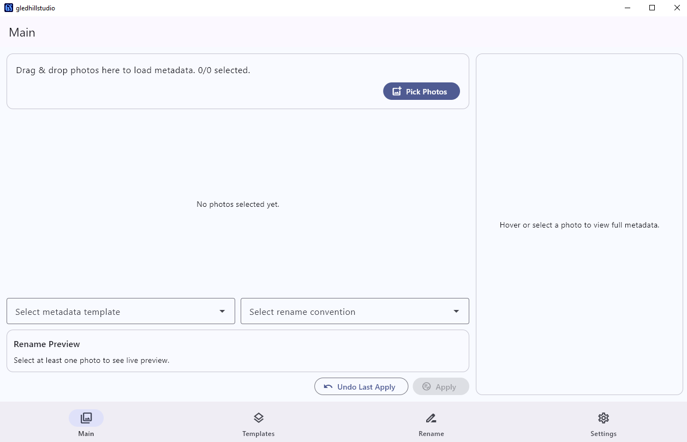
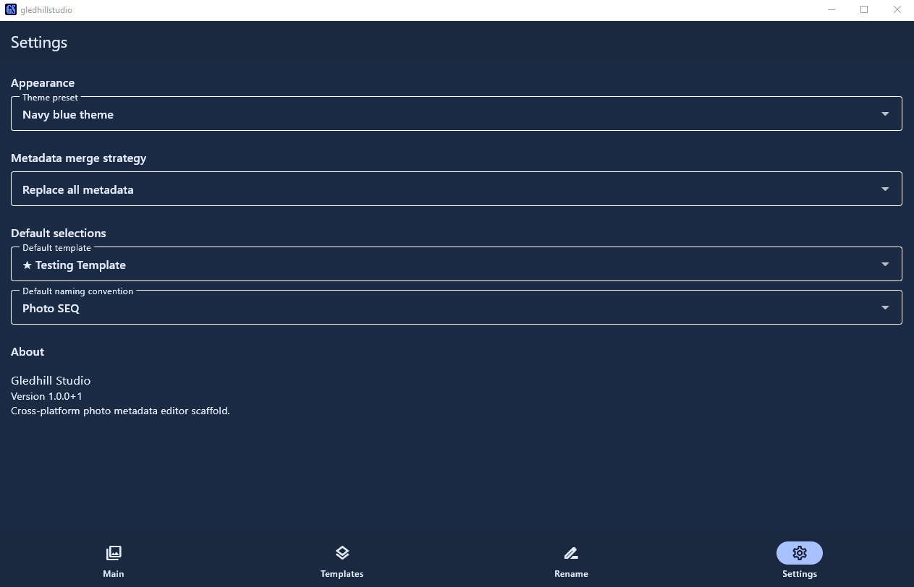
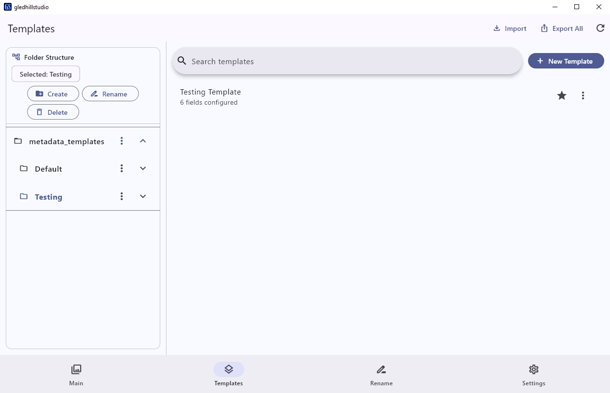

Metadata Editing
Update EXIF/IPTC fields across large photo sets with precision and consistency.
A clean, fast way to batch edit photo metadata, apply reusable templates, and rename images in seconds.
macOS Intel + Apple Silicon • Windows • Linux AppImage • Local-first

Update EXIF/IPTC fields across large photo sets with precision and consistency.
Save metadata presets and apply them in one click for repeatable, accurate workflows.
Rename entire folders using predictable patterns and sequence rules instantly.


Select one folder or many and preview your files in a focused workspace.
Make direct metadata changes or apply your saved presets in bulk.
Run batch renaming, review changes, then save confidently.
Gledhill Metadata runs locally on your computer. Your photos and metadata are processed on-device and are not uploaded to a cloud service.
Choose your platform and start editing metadata faster today.
Install or remove from terminal with one command.
curl -fsSL https://raw.githubusercontent.com/Nerd-or-Geek/Gledhill-Metadata/main/linux/install.sh | bashcurl -fsSL https://raw.githubusercontent.com/Nerd-or-Geek/Gledhill-Metadata/main/linux/uninstall.sh | bashRoadmap and release notes will appear here in upcoming versions.
Read the documentation for importing photos, applying metadata templates, resizing the photo browser, troubleshooting macOS permissions, and reporting bugs.